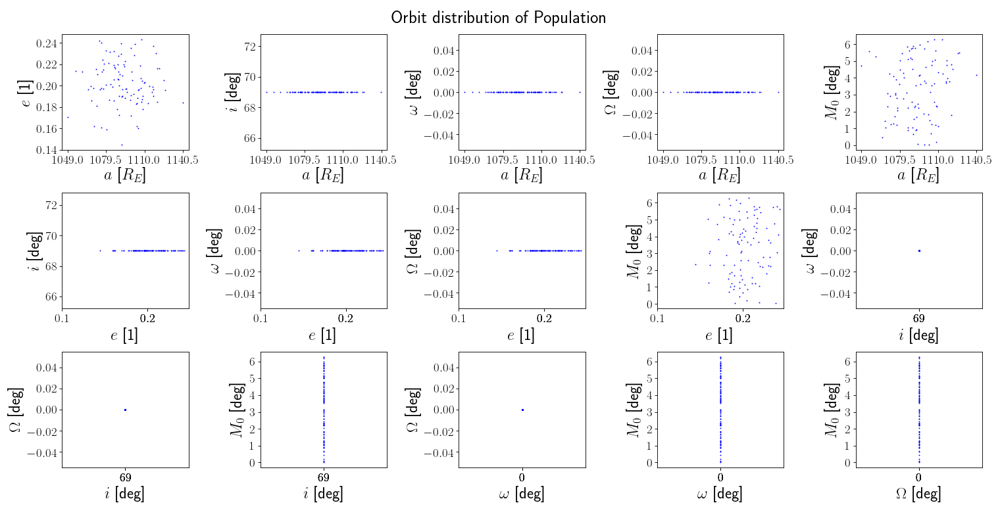
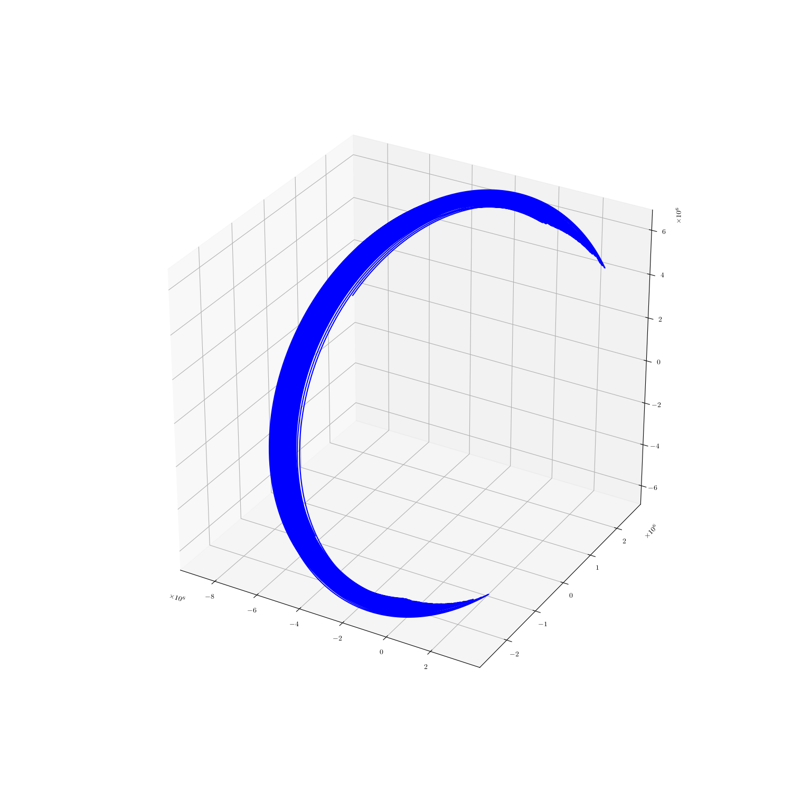

Note
Click here to download the full example code
Populations¶


import numpy as np
import matplotlib.pyplot as plt
from sorts.propagator import SGP4
from sorts import Population
from sorts import plotting
t = np.linspace(0,3600*10,num=2000)
pop = Population(
extra_columns = ['m', 'A', 'C_R', 'C_D'],
dtypes = ['f']*4,
space_object_uses = [True]*4,
propagator = SGP4,
propagator_options = dict(
settings = dict(
out_frame='TEME',
),
)
)
pop.allocate(100)
# * 0: oid - Object ID
# * 1: a - Semi-major axis in m
# * 2: e - Eccentricity
# * 3: i - Inclination in degrees
# * 4: raan - Right Ascension of ascending node in degrees
# * 5: aop - Argument of perihelion in degrees
# * 6: mu0 - Mean anoamly in degrees
# * 7: mjd0 - Epoch of object given in Modified Julian Days
pop['oid'] = np.arange(100)
pop['a'] = np.random.randn(100)*100e3 + 6950e3
pop['e'] = np.random.randn(100)*0.02 + 0.2
pop['i'] = 69.0
pop['raan'] = 0
pop['aop'] = 0
pop['mu0'] = np.random.rand(100)*np.pi*2
pop['mjd0'] = 57125.7729
pop['m'] = 0.1
pop['A'] = 1
pop['C_R'] = 0.1
pop['C_D'] = 2.7
plotting.orbits(
pop.get_all_orbits(order_angs=True),
title = "Orbit distribution of Population",
)
fig = plt.figure(figsize=(15,15))
ax = fig.add_subplot(111, projection='3d')
for SO in pop.object_generator():
states = SO.get_state(t)
ax.plot(states[0,:], states[1,:], states[2,:],"-b")
plt.show()
Total running time of the script: ( 0 minutes 25.328 seconds)